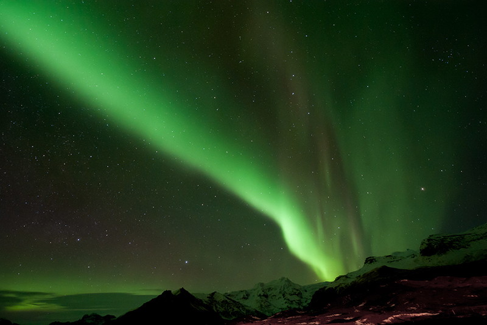

Watching Aurora in Iceland
April 5, 2014
Auroras that occur in the northern hemisphere are called Aurora Borealis or northern lights, and auroras that occur in the southern hempishere are called Aurora Australis or southern lights.
To Be Finished...
Normally, October is the perfect time of year to spot the Aurora Borealis in Iceland. And without a doubt, it has attracted lots of tourists travelling all the way to this small country, just to capture a hang-on-the-wall picture of Aurora. Now this year, holidaymakers heading north could be in for a double treat thanks to its erupting volcano.
Hold on right there! Did you just say Volcano? Isn't it true that Iceland is covered with ice? Well it is pretty cold out there and lots of area ARE covered with ice. So you probably would never expect a volcano sleeping under that ground. But truth is there is a huge volcano lying underground, and it is also erupting at this time.